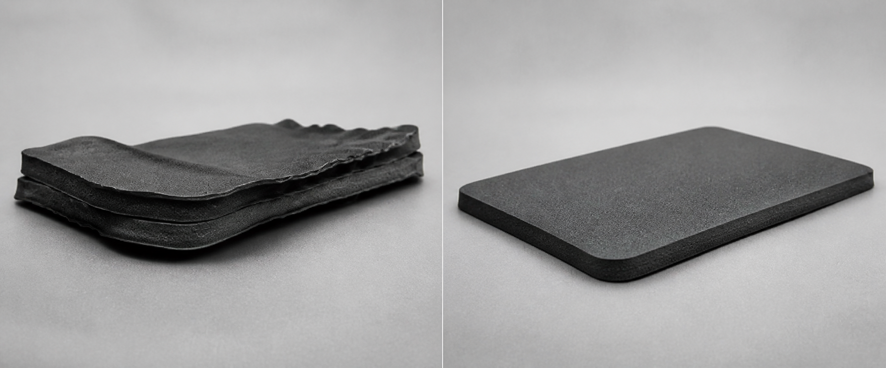
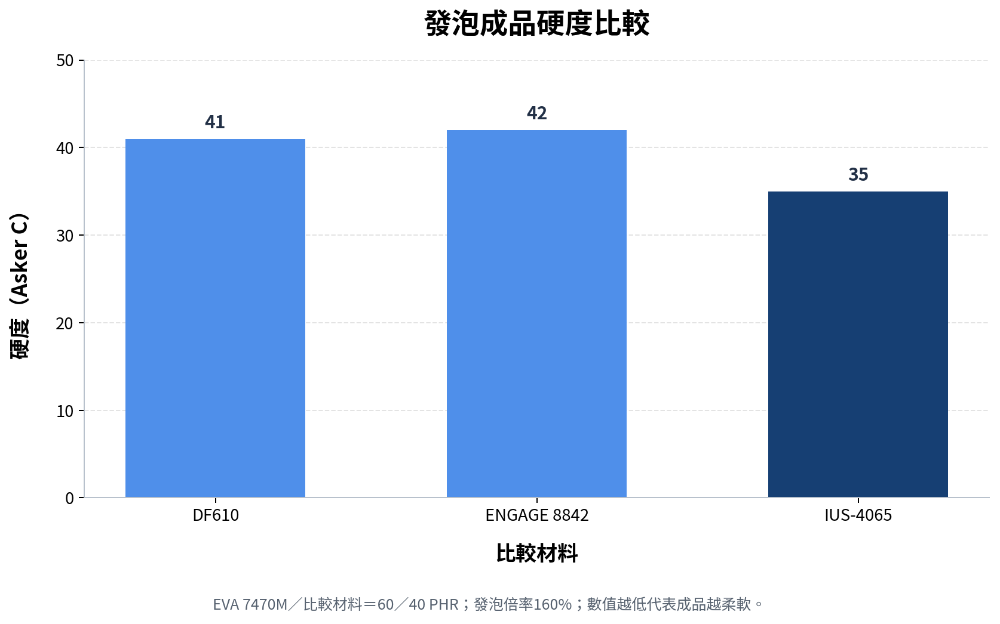
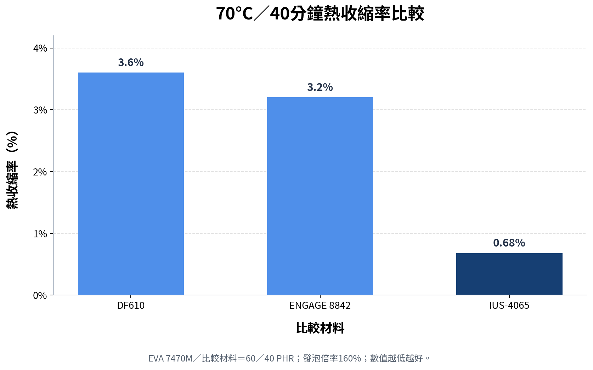
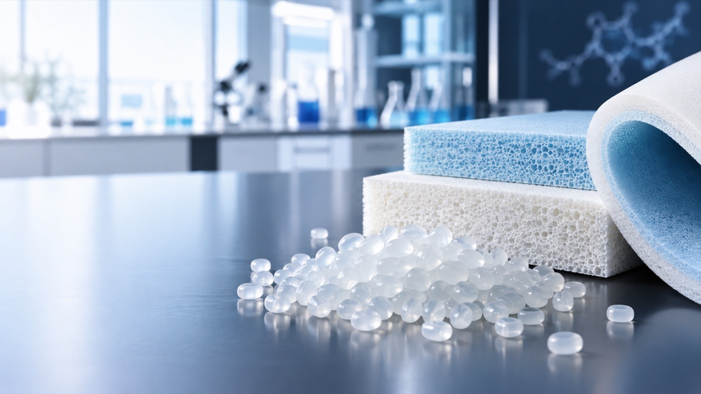
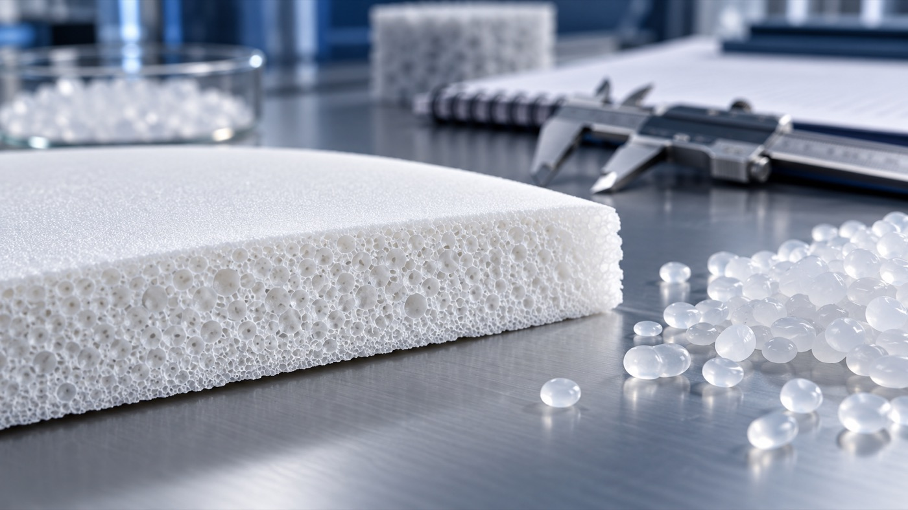

柔軟度
降低成品硬度，提升包覆、緩衝與踩踏舒適性。
EVA與POE發泡配方的柔軟度、回彈與二次加工尺寸穩定解決方案。
低硬度POE可改善柔軟度與觸感，但二次加熱可能使發泡結構鬆弛，導致縮邊、翹曲、尺寸超差與貼合錯位。研發真正需要解決的，是降低硬度並維持回彈的同時，控制合貼加熱後的尺寸變化。
降低成品硬度，提升包覆、緩衝與踩踏舒適性。
減少烘烤、熱壓與合貼後的二次尺寸變化。
降低左右腳差異、貼合錯位與批次外觀波動。
為追求極致柔軟度與高反彈，中底配方常選用TAFMER™或ENGAGE™系列POE。TAFMER™ DF640與ENGAGE™ 8842的典型硬度約為Shore A 54至56，可提供良好的柔軟性與觸感，但其熔融轉變溫度低於50°C；當合貼、烘烤或熱壓溫度高於此區間時，發泡結構可能重新鬆弛，增加二次收縮、縮邊與翹曲風險。
| 材料 | 原料硬度 | DSC熔融峰值 | 主要優勢 | 配方與加工關注點 |
|---|---|---|---|---|
| TAFMER™ DF640 | 約54至56A | 低於50°C | 柔軟性與觸感良好 | 二次加熱尺寸穩定性需驗證 |
| ENGAGE™ 8842 | 約54至56A | 低於50°C | 柔軟性、彈性良好 | 合貼與烘烤後可能產生熱收縮 |
| IUS-4065 | 約40A | 約64°C | 更低硬度與良好柔韌性 | 較寬熱加工窗口；成品收縮仍以配方實測確認 |
熔融峰值不是決定成品收縮率的唯一因素。EVA比例、交聯系統、發泡倍率與二次加工條件均會影響最終結果；本頁以70°C加熱40分鐘的配方對照測試作為實際驗證。
相同60／40 PHR對照配方下，IUS-4065發泡體硬度達Asker C 35，提供更柔軟的踩踏與緩衝感。
DSC熔融峰值約64°C，可降低材料在合貼、烘烤或熱壓過程中過早軟化與結構鬆弛的風險。
70°C加熱40分鐘後的熱收縮率為0.68%，較DF610與ENGAGE 8842對照配方降低約79%至81%。
斷裂延伸率達252.36%，較兩組對照配方提高約9%至11%，展現良好的柔韌性。
在硬度明顯降低後，球落回彈率仍維持60%，兼顧柔軟度與彈性表現。
可依目標硬度、發泡倍率、密度與尺寸收縮要求，提供起始配方、試樣、物性測試及量產驗證。
IUS-4065是一款高性能彈性體改質材料，材料硬度約Shore A 40，DSC熔融峰值約64°C。透過合理的EVA／POE比例、交聯系統與發泡條件，可提升二次加工後的尺寸保持能力。
它不是只追求低硬度的通用型TPE，而是針對柔軟度、回彈與尺寸穩定性難以兼顧的研發痛點設計。

EVA 7470M／比較材料＝60／40 PHR，發泡倍率160%。數據為特定配方與條件下的典型值。


| 測試項目 | 單位與條件 | DF610 | ENGAGE 8842 | IUS-4065 | 結果解讀 |
|---|---|---|---|---|---|
| 硬度 | Asker C | 41 | 42 | 35 | 更柔軟 |
| 比重 | g/cm³ | 0.1826 | 0.1875 | 0.1816 | 最低 |
| 拉伸強度 | kgf/cm² | 19.73 | 19.05 | 18.25 | 略低但接近 |
| 斷裂延伸率 | % | 227.65 | 231.43 | 252.36 | 最高 |
| 撕裂強度 | kgf/cm | 8.56 | 8.08 | 7.46 | 需依需求優化 |
| 壓縮永久變形 | % 23°C 6h | 28.50 | 29.12 | 31.67 | 略高 |
| 熱收縮率 | % 70°C 40min | 3.60 | 3.20 | 0.68 | 顯著降低 |
| 球落回彈率 | % | 60 | 61 | 60 | 維持 |
| 發泡倍率 | % | 160 | 160 | 160 | 相同 |
IUS-4065的優勢集中在更低硬度、更高延伸率與顯著降低熱收縮；拉伸與撕裂強度略低，壓縮永久變形略高，應依實際產品要求進一步優化配方。
| 項目 | IUS-4065典型資料 |
|---|---|
| 產品類型 | 超柔軟低收縮彈性體改質材料 |
| 材料外觀 | 半透明白色顆粒 |
| 材料硬度 | 約Shore A 40 |
| DSC熔融峰值 | 約64°C |
| 主要適用體系 | EVA／POE及彈性體發泡配方 |
| 核心功能 | 柔軟化、維持回彈及改善二次加工尺寸穩定性 |
| 適用製程 | 化學發泡、射出發泡、模壓成型、冷熱壓及合貼加工 |
| 配方方式 | 依目標硬度、發泡倍率、機械性能與加工條件調整添加比例 |

提供現有材料牌號、配方比例、目標硬度、發泡倍率及二次加工條件，可進一步進行起始配方、試樣、機械物性與二次熱收縮評估。
本頁數據為特定配方與測試條件下的內部典型值，僅供材料篩選與配方開發參考，不構成所有配方、製程或成品的保證規格。
